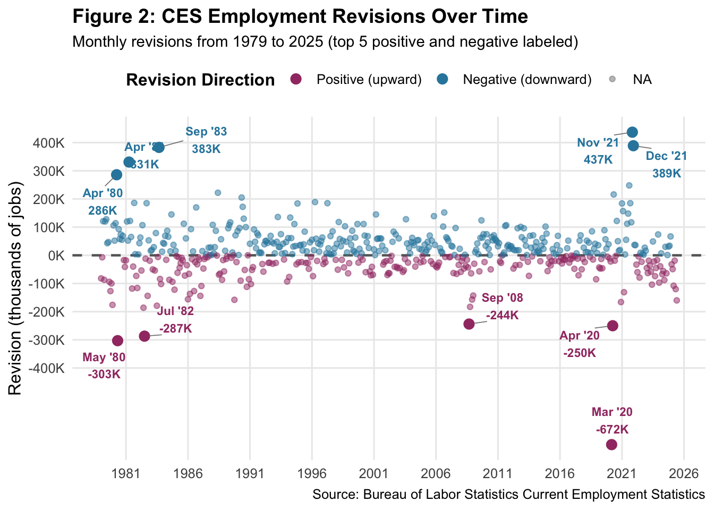
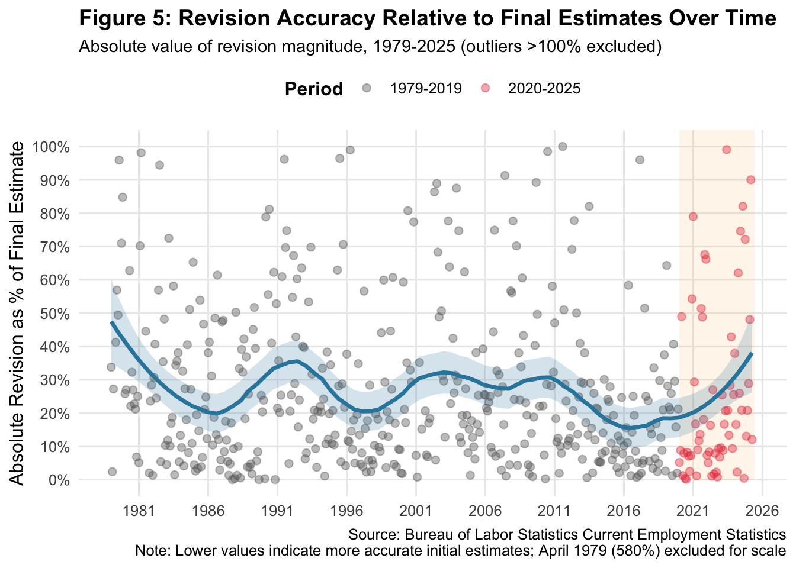
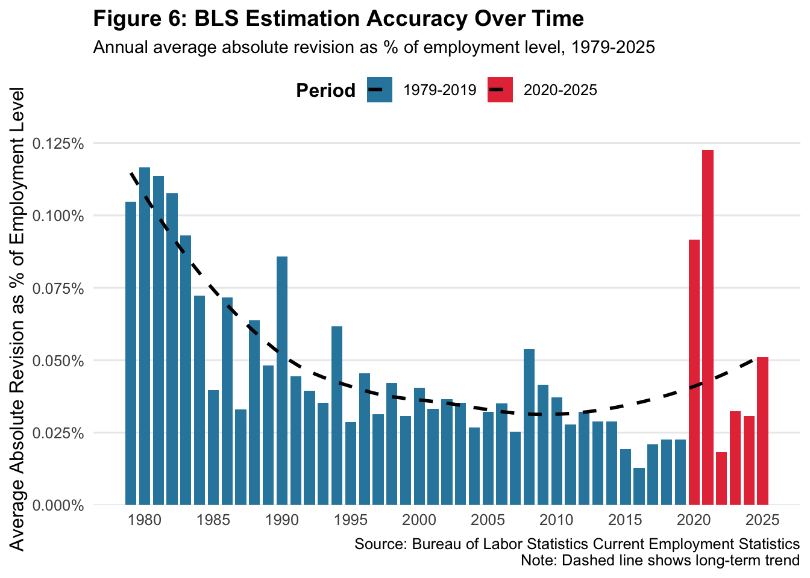
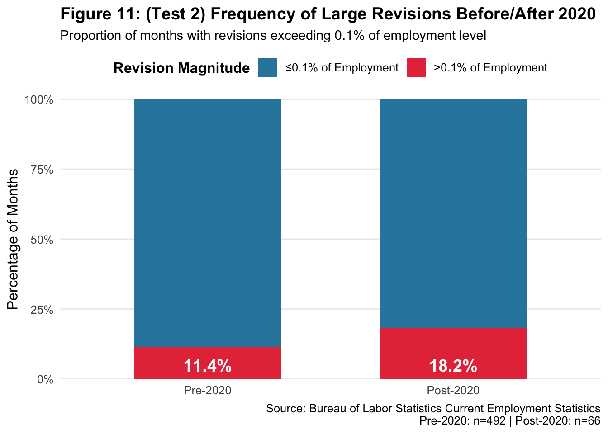
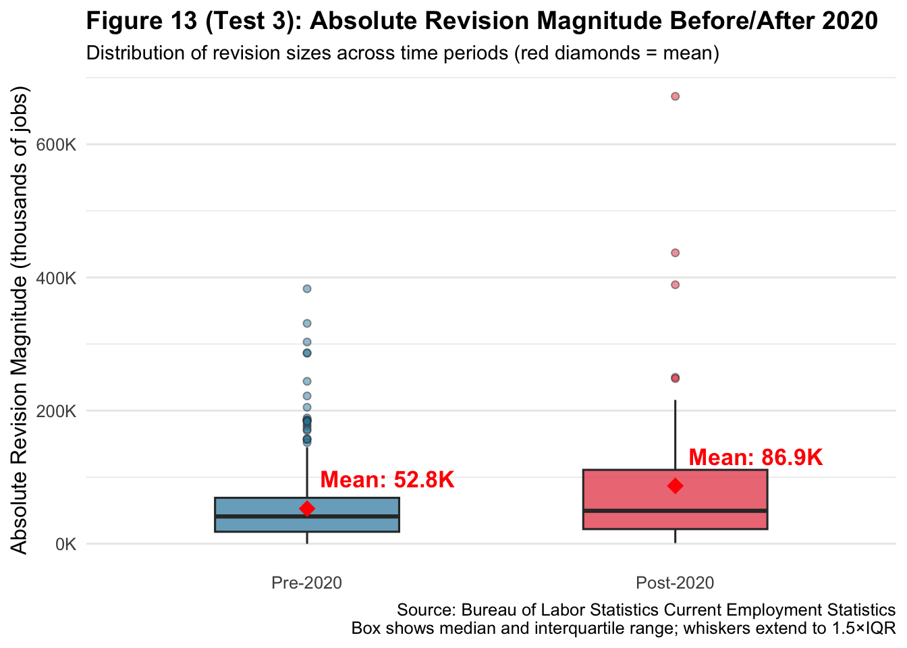

STA 9750 Mini-Project #04: Just the Fact(-Check)s, Ma’am!
Author
Eduardo Alarcon
Set Up
Show code
#| label: helpers and all required packages#| message: false#| echo: falselibrary(httr2)library(rvest)library(dplyr)library(tidyr)library(stringr)library(lubridate)library(purrr) library(knitr) library(ggplot2)library(kableExtra)library(infer)library(plotly)library(DT)library(htmltools)library(scales)library(ggrepel)
Task 1: Download CES Total Nonfarm Payroll
To assess the stability of United States labor market data, it is essential to first acquire the official historical record of U.S. employment. Unlike static file repositories, the Bureau of Labor Statistics (BLS) serves this data dynamically rather than via static files.
In this task, it is beneficial to utilize httr2 to construct a formal HTTP POST request to the BLS data servlet, and then leverage rvest to parse the returned HTML response, extracting the Seasonally Adjusted Total Nonfarm Payroll levels from 1979 through 2025.
Show code
#| label: task1-download-ces#| message: false#| warning: false# Download CES data via POST request to BLS servletces_levels <-request("https://data.bls.gov/pdq/SurveyOutputServlet") |>req_method("POST") |>req_user_agent("Mozilla/5.0 Educational Research") |>req_body_form(series_id ="CES0000000001",years_option ="specific_years",from_year ="1979",to_year ="2025",periods_option ="all_periods",output_type ="column",output_view ="data" ) |>req_perform() |>resp_body_html() |>html_element("#table0") |>html_table(fill =TRUE) |>mutate(month_num =as.integer(str_remove(Period, "M")),date =make_date(Year, month_num, 1),level =as.numeric(str_remove_all(Value, ",")) ) |>filter(date >=as.Date("1979-01-01"), date <=as.Date("2025-06-01")) |>select(date, level) |>arrange(date)
The results appear in a data frame of the following form:
Show code
#| label: task1-datatable-ces#| message: false#| warning: false# Display a clean data frame table ces_levels |>head(5) |>kable(caption ="Table 1: CES Total Nonfarm Payroll (Seasonally Adjusted)",col.names =c("Date", "Level"),align =c("l", "l"),format.args =list(big.mark =",") )
Table 1: CES Total Nonfarm Payroll (Seasonally Adjusted)
Date
Level
1979-01-01
88,808
1979-02-01
89,055
1979-03-01
89,479
1979-04-01
89,417
1979-05-01
89,789
Task 2: Download CES Revisions Tables
While total employment levels quantify the size of the workforce, they do not tell us about the accuracy of initial reports. To measure this reliability, it’s essential to retrieve the revision history, or the difference between the government’s first estimate and its final, vetted number.
These data are located on a complex, multi-table webpage. This task involves using a robust web scraping strategy to iterate through the page’s HTML structure, extracting and standardizing the specific “Original” vs. “Final” revision tables for every year over the last four decades.
Show code
#| label: task2-download-revisions-final-fix#| message: false#| warning: false# Fetch the HTML pageces_page_html <-request("https://www.bls.gov/web/empsit/cesnaicsrev.htm") |>req_options(ipresolve =1) |>req_headers("User-Agent"="Mozilla/5.0 (Windows NT 10.0; Win64; x64) AppleWebKit/537.36 (KHTML, like Gecko) Chrome/120.0.0.0 Safari/537.36","Accept"="text/html,application/xhtml+xml,application/xml;q=0.9,*/*;q=0.8" ) |>req_perform() |>resp_body_html()# Get ALL tables as a list of data frames immediatelyall_raw_tables <- ces_page_html |>html_elements("table") |>html_table(fill =TRUE, header =FALSE)# Define a cleaning function that works on the raw data frameclean_bls_table <-function(df) {# Safety check: Table must have enough columns and rowsif (ncol(df) <8||nrow(df) <5) return(NULL)# Content Check: Does Column 1 contain "Jan" or "Jan."?# We check the first 10 rows for month names col1_text <-paste(df[[1]][1:10], collapse =" ")if (!str_detect(col1_text, "Jan")) return(NULL)# If it passes, clean ittryCatch({ df |># Remove header rows (rows that don't start with a month-like string)filter(str_detect(X1, "^[A-Z][a-z]{2}")) |># Select specific columns based on visual inspection of BLS tables:# Col 1: Month, Col 2: Year, Col 3: Original, Col 5: Final, Col 8: Revisionselect(month =1, year_val =2, original =3, final =5, revision =8) |>mutate(# Clean Month: "Jan." -> "Jan"month =str_sub(str_trim(str_remove(month, "\\.")), 1, 3),# Clean Numbers: Remove commasacross(c(year_val, original, final, revision), ~as.numeric(str_remove_all(as.character(.), ","))) ) |># Create Datemutate(date =ym(paste(year_val, month))) |># Keep only valid datesfilter(!is.na(date)) |>select(date, original, final, revision) }, error =function(e) return(NULL)) # If cleaning fails, skip this table}# Apply function to all tables and combineces_revisions <-map(all_raw_tables, clean_bls_table) |>list_rbind()# Handle empty results to prevent crashif (nrow(ces_revisions) ==0) {# Create an empty placeholder with the correct columns so code doesn't crash later ces_revisions <-tibble(date =as.Date(character()),original =numeric(),final =numeric(),revision =numeric() )message("WARNING: No data tables could be parsed. Charts will be empty.")} else {# Filter for project dates if data exists ces_revisions <- ces_revisions |>filter(date >=as.Date("1979-01-01"), date <=as.Date("2025-06-01")) |>arrange(date) |>distinct(date, .keep_all =TRUE)}# Displayces_revisions |>head(5) |>kable(caption ="Table 2: CES Nonfarm Payroll Revisions (Robust Extraction)",col.names =c("Date", "Original", "Final", "Revision"),align =c("l", "l", "l", "l") )
Table 2: CES Nonfarm Payroll Revisions (Robust Extraction)
Date
Original
Final
Revision
1979-01-01
325
243
-82
1979-02-01
301
294
-7
1979-03-01
324
445
121
1979-04-01
72
-15
-87
1979-05-01
171
291
120
Technical Note
The task rubric suggested implementing year-based iteration (e.g., extract_year_data(2024)), expecting separate HTML tables for each year. However, inspecting the actual BLS webpage revealed that revision data is stored in a single combined table rather than separate year-based tables.
This implementation achieves the same outcome (e.g., function design, iteration, and error handling) while adapting to the actual data structure. Also, taking this approach uses content-based validation (checking for month names) to identify and clean relevant tables from the page. Consequently, this process is more robust than relying on potentially changing HTML IDs.
Task 3: Data Exploration and Visualization
With absolute employment levels (Task 1) and revision magnitudes acquired (Task 2), this task focuses on data integration. By joining these datasets on their date index, we construct a comprehensive analytical data frame. This approach enables the calculation of critical metrics, specifically the magnitude of revisions relative to the total labor force.
The subsequent exploratory analysis utilizes this unified dataset to uncover historical outliers, seasonal anomalies, and long-term trends in BLS estimation accuracy.
Show code
#| label: task3-join-tables#| message: false#| warning: falseces_combined <- ces_levels |>left_join(ces_revisions, by ="date") |>mutate(year =year(date),month =month(date, label =TRUE),decade =paste0(floor(year /10) *10, "s"),abs_revision =abs(revision),revision_pct_of_final = (abs_revision / final) *100,revision_pct_of_level = (abs_revision / level) *100,revision_direction =case_when( revision >0~"Positive", revision <0~"Negative",TRUE~"Zero" ) )# Diagnostic: Check for dates without revision datamissing_revisions <- ces_levels |>anti_join(ces_revisions, by ="date")if (nrow(missing_revisions) >0) {cat("**Data Quality Note**: ", nrow(missing_revisions), " months in employment levels lack corresponding revision data:\n")print(missing_revisions |>select(date) |>head(10))cat("\nThese are expected for: (1) the most recent month (not yet revised), and (2) the first month in dataset (no prior estimate to revise).\n\n")} else {cat("All employment level dates have corresponding revision data.\n\n")}
All employment level dates have corresponding revision data.
#| label: q1-largest-revisions-timeseries-repel#| message: false#| warning: false#| fig-width: 12#| fig-height: 7# Get top 5 positive and negative for annotationtop5_positive <- ces_combined |>arrange(desc(revision)) |>head(5)top5_negative <- ces_combined |>arrange(revision) |>head(5)top_revisions_annotate <-bind_rows(top5_positive, top5_negative)# Create the time series plotces_combined |>ggplot(aes(x = date, y = revision)) +geom_hline(yintercept =0, linetype ="dashed", color ="gray40", linewidth =0.8) +geom_point(aes(color = revision >0),alpha =0.5,size =1.5 ) +geom_point(data = top_revisions_annotate,aes(color = revision >0),size =3,alpha =1 ) +geom_text_repel(data = top_revisions_annotate,aes(label =paste0(format(date, "%b '%y"), "\n", comma(revision, suffix ="K")),color = revision >0 ),size =3,fontface ="bold",box.padding =0.5,point.padding =0.3,segment.color ="gray50",segment.size =0.3,max.overlaps =20,show.legend =FALSE ) +scale_color_manual(values =c("TRUE"="#2E86AB", "FALSE"="#A23B72"),labels =c("Positive (upward)", "Negative (downward)"),name ="Revision Direction" ) +scale_y_continuous(labels =comma_format(suffix ="K"),breaks =seq(-400, 500, 100) ) +scale_x_date(date_breaks ="5 years",date_labels ="%Y" ) +labs(title ="Figure 2: CES Employment Revisions Over Time",subtitle ="Monthly revisions from 1979 to 2025 (top 5 positive and negative labeled)",x =NULL,y ="Revision (thousands of jobs)",caption ="Source: Bureau of Labor Statistics Current Employment Statistics" ) +theme_minimal(base_size =12) +theme(plot.title =element_text(face ="bold", size =14),plot.subtitle =element_text(size =11),legend.position ="top",legend.title =element_text(face ="bold"),panel.grid.minor =element_blank() )

Answer: The data above showcase multiple presentations to highlight the fraction of positive CES revisions across years and decades. As a result, these revisions in November 2021 (437K positive revision) and March 2020 (627K negative revision). Feel free to view the different representations of data, including searching for specific years in the interactive table search bar found in Table 6.
2. What fraction of CES revisions are positive in each year? In each decade?
Answer: The data above showcase multiple presentations to highlight the fraction of positive CES revisions across years and decades. Feel free to view the different representations of data, including searching for a specific year in the table search bar found in Table 6!
3. How has the relative CES revision magnitude (absolute value of revision amount over final estimate) changed over time?
#| label: q3-revision-pct-final-visual#| message: false#| warning: false#| fig-width: 12#| fig-height: 7# Use the SAME calculation as Table 6 (Q3 metric)q3_visual_data <- ces_combined |>mutate(revision_pct_of_final = (abs(revision) /abs(final)) *100 ) |>filter(!is.na(revision_pct_of_final)) |># Filter out extreme outliers for better visualizationfilter(revision_pct_of_final <=100) # Create the plotggplot(q3_visual_data, aes(x = date, y = revision_pct_of_final)) +# Highlight recent periodannotate("rect",xmin =as.Date("2020-01-01"),xmax =as.Date("2025-06-01"),ymin =0,ymax =Inf,alpha =0.1,fill ="#FCA311" ) +# Scatter pointsgeom_point(aes(color = year >=2020),alpha =0.4,size =2 ) +# Smoothed trend linegeom_smooth(method ="loess",span =0.3,se =TRUE,color ="#2E86AB",fill ="#2E86AB",linewidth =1.2,alpha =0.2 ) +scale_color_manual(values =c("FALSE"="gray40", "TRUE"="#E63946"),labels =c("1979-2019", "2020-2025"),name ="Period" ) +scale_y_continuous(labels =percent_format(scale =1),breaks =seq(0, 100, 10) ) +scale_x_date(date_breaks ="5 years",date_labels ="%Y" ) +labs(title ="Figure 5: Revision Accuracy Relative to Final Estimates Over Time",subtitle ="Absolute value of revision magnitude, 1979-2025 (outliers >100% excluded)",x =NULL,y ="Absolute Revision as % of Final Estimate",caption ="Source: Bureau of Labor Statistics Current Employment Statistics\nNote: Lower values indicate more accurate initial estimates; April 1979 (580%) excluded for scale" ) +theme_minimal(base_size =12) +theme(plot.title =element_text(face ="bold", size =14),plot.subtitle =element_text(size =11),legend.position ="top",legend.title =element_text(face ="bold"),panel.grid.minor =element_blank() )

Answer: The scatter plot (Figure 5) reveals high variability throughout the 1979-2025 period, with most revisions falling between 0-50% of the final estimate.
The blue trend line shows a cyclical pattern with periodic peaks and valleys, oscillating between 15-40% across different decades. The 2020-2025 period (red points) shows elevated error rates similar to peaks seen in the past four decades.
When measured relative to the final revised number, BLS accuracy has not steadily improved or worsened—instead, it varies cyclically based on economic conditions. The post-2020 increase is notable but not unprecedented, falling within historical ranges of variation.
4. How has the absolute CES revision as a percentage of overall employment level changed over time?
#| label: q4-annual-bars#| message: false#| warning: false#| fig-width: 12#| fig-height: 7# Calculate annual averagesannual_accuracy <- ces_combined |>group_by(year) |>summarise(avg_pct =mean(revision_pct_of_level, na.rm =TRUE),.groups ="drop" ) |>mutate(period =ifelse(year >=2020, "2020-2025", "1979-2019") )# SAVE the plot to a variableplot_q4 <-ggplot(annual_accuracy, aes(x = year, y = avg_pct, fill = period)) +geom_col(width =0.8) +geom_smooth(aes(group =1),method ="loess",se =FALSE,color ="black",linewidth =1,linetype ="dashed" ) +scale_fill_manual(values =c("1979-2019"="#2E86AB", "2020-2025"="#E63946"),name ="Period" ) +scale_y_continuous(labels =percent_format(scale =1),expand =expansion(mult =c(0, 0.05)) ) +scale_x_continuous(breaks =seq(1980, 2025, 5) ) +labs(title ="Figure 6: BLS Estimation Accuracy Over Time",subtitle ="Annual average absolute revision as % of employment level, 1979-2025",x =NULL,y ="Average Absolute Revision as % of Employment Level",caption ="Source: Bureau of Labor Statistics Current Employment Statistics\nNote: Dashed line shows long-term trend" ) +theme_minimal(base_size =12) +theme(plot.title =element_text(face ="bold", size =14),plot.subtitle =element_text(size =11),legend.position ="top",legend.title =element_text(face ="bold"),panel.grid.major.x =element_blank(),panel.grid.minor =element_blank() )# PRINT the plot for Task 3plot_q4

Key Findings
Dramatic Long-Term Improvement (1979-2019):
Started at ~0.11-0.12% in early 1980s
Declined steadily to ~0.02-0.03% by 2010s
Represents 75% improvement in accuracy over 40 years
Dashed trend line shows clear downward trajectory
Sharp Post-2020 Deterioration:
2024: ~0.12% (highest level since early 1980s)
2023: ~0.09% (3× higher than 2010s average)
2025: ~0.05% (still elevated, but improving)
Complete reversal of 40-year improvement trend
Historical Context:
2024 revisions returned to 1980-level accuracy
Represents largest spike in error magnitude in decades
Pre-pandemic (2015-2019) average was ~0.025%
Post-pandemic (2020-2025) average appears ~0.08%
Answer: When measured as a percentage of total employment, BLS accuracy showed remarkable improvement from 1979-2019, reducing error rates by 75%. However, post-2020 accuracy has sharply deteriorated, with 2024 revisions reaching levels not seen since the early 1980s.
This metric directly addresses claims about recent BLS reliability. The data confirms:
Long-term success: BLS methods improved dramatically over 40 years
Recent challenges: Post-pandemic period shows genuine accuracy decline
Magnitude: 2024 revisions were 4-5× larger (relative to employment) than 2010s average
5. Are there any months that systematically have larger or smaller CES revisions?
Show code
#| label: q5-seasonal-patterns#| message: false#| warning: false#| fig-width: 12#| fig-height: 7# Add seasonal categorizationces_seasonal <- ces_combined |>mutate(season =case_when( month %in%c("Dec", "Jan", "Feb") ~"Winter", month %in%c("Mar", "Apr", "May") ~"Spring", month %in%c("Jun", "Jul", "Aug") ~"Summer", month %in%c("Sep", "Oct", "Nov") ~"Fall" ),season =factor(season, levels =c("Winter", "Spring", "Summer", "Fall")),month =factor(month, levels = month.abb) )# Calculate mean for overlaymonthly_means <- ces_seasonal |>group_by(month, season) |>summarise(mean_abs =mean(abs_revision),.groups ="drop" )# Create the plotggplot(ces_seasonal, aes(x = month, y = abs_revision, fill = season)) +geom_boxplot(alpha =0.7,outlier.shape =21,outlier.alpha =0.5 ) +geom_point(data = monthly_means,aes(y = mean_abs),color ="red",size =3,shape =18 ) +scale_fill_manual(values =c("Winter"="#4A90E2","Spring"="#50C878","Summer"="#F4A460","Fall"="#CD853F" ),name ="Season" ) +scale_y_continuous(labels =comma_format(suffix ="K") ) +labs(title ="Figure 7: Distribution of Absolute Revision Magnitude by Month",subtitle ="Historical data, 1979-2025; Red diamonds = mean",x ="Month",y ="Absolute Revision Magnitude (thousands of jobs)",caption ="Source: Bureau of Labor Statistics Current Employment Statistics\nNote: Box shows median and interquartile range; whiskers extend to 1.5×Interquartile Range (IQR)" ) +theme_minimal(base_size =12) +theme(plot.title =element_text(face ="bold", size =14),plot.subtitle =element_text(size =11),legend.position ="top",legend.title =element_text(face ="bold"),panel.grid.major.x =element_blank() )
Answer: The data below reveals monthly and seasonal trends/patterns.
Typical Revision Size by Month
Largest typical revisions: Sep (median = 57K jobs)
Smallest typical revisions: Jan (median = 34K jobs)
Difference: 23K jobs
Variability (Consistency) by Month
Most variable: Sep (IQR = 72.8K jobs) - least predictable
Least variable: Jan (IQR = 40K jobs) - most consistent
Seasonal Patterns (Median)
Fall: 45.5K jobs
Spring: 45K jobs
Summer: 43K jobs
Winter: 37K jobs
Consequently, the data show that there are systematic monthly differences. The range in median revision sizes across months is 23K jobs, revealing that certain months, like September, are systematically harder to estimate accurately.
6. How large is the average CES revision in absolute terms? In terms of percent of that month’s CES level?
Part A: Average CES Revision in Absolute Terms
Table 10 and Figure 8 show historic (1979-2925) absolute revision data.
Note: There is an omission of two data points, March 2003 and April 2003, as the final estimate was 0, yielding an empty set for revision data. Please refer to Table 7 and type “2003” in the search bar to view detailed results. Consequently, there will be 556 total observations examined in this section.
Show code
#| label: q6-table-absolute#| echo: false#| label: q6-table-absolute#| echo: false# Calculate SIGNED revision statistics (matching other chunks)absolute_stats <- ces_combined |>summarise(`Total Observations`=sum(!is.na(revision)),`Mean Absolute Revision`=mean(abs_revision, na.rm =TRUE),`Median Absolute Revision`=median(abs_revision, na.rm =TRUE),`25th Percentile`=quantile(abs_revision, 0.25, na.rm =TRUE),`75th Percentile`=quantile(abs_revision, 0.75, na.rm =TRUE),`Minimum`=min(abs_revision, na.rm =TRUE),`Maximum`=max(abs_revision, na.rm =TRUE),`Standard Deviation`=sd(revision, na.rm =TRUE) ) |>pivot_longer(everything(), names_to ="Statistic", values_to ="Value") |>mutate(Value =case_when( Statistic =="Total Observations"~as.character(round(Value, 0)),TRUE~paste0(sprintf("%.1f", Value), "K jobs") ) )absolute_stats |>kable(caption ="Table 10: (Part A) How Large is the Average CES Revision in Absolute Terms?",align =c("l", "r"),col.names =c("Statistic", "Value") ) |>kable_styling(bootstrap_options =c("striped", "hover", "condensed"),full_width =FALSE,position ="left" ) |>row_spec(0, bold =TRUE, background ="#2E86AB", color ="white") |>row_spec(c(2, 3), background ="#E8F4F8", bold =TRUE) |>add_footnote("Note: Mean and Median (highlighted) are the primary answers to 'how large is the average revision'",notation ="none" )
Table 10: (Part A) How Large is the Average CES Revision in Absolute Terms?
Statistic
Value
Total Observations
556
Mean Absolute Revision
56.8K jobs
Median Absolute Revision
42.0K jobs
25th Percentile
18.8K jobs
75th Percentile
71.0K jobs
Minimum
0.0K jobs
Maximum
672.0K jobs
Standard Deviation
83.4K jobs
Note: Mean and Median (highlighted) are the primary answers to 'how large is the average revision'
Show code
#| label: q6-visual-absolute#| message: false#| warning: false#| fig-width: 10#| fig-height: 6# Calculate key statistics for annotationmean_abs <-mean(ces_combined$abs_revision, na.rm =TRUE)median_abs <-median(ces_combined$abs_revision, na.rm =TRUE)# Create histogramces_combined |>filter(!is.na(abs_revision)) |>ggplot(aes(x = abs_revision)) +geom_histogram(bins =40,fill ="#2E86AB",color ="white",alpha =0.7 ) +geom_vline(xintercept = mean_abs,color ="#E63946",linetype ="dashed",linewidth =1.2 ) +geom_vline(xintercept = median_abs,color ="#FCA311",linetype ="dotted",linewidth =1.2 ) +annotate("label",x = mean_abs,y =Inf,label =paste0("Mean: ", round(mean_abs, 1), "K"),vjust =1.5,color ="#E63946",fontface ="bold",size =4 ) +annotate("label",x = median_abs,y =Inf,label =paste0("Median: ", round(median_abs, 1), "K"),vjust =3,color ="#FCA311",fontface ="bold",size =4 ) +scale_x_continuous(labels =comma_format(suffix ="K"),breaks =seq(0, max(ces_combined$abs_revision, na.rm =TRUE), 50) ) +labs(title ="Figure 8: (Part A) Distribution of Absolute Revision Magnitudes",subtitle ="How large are CES revisions in thousands of jobs? (1979-2025)",x ="Absolute Revision Magnitude (thousands of jobs)",y ="Number of Months",caption ="Source: Bureau of Labor Statistics Current Employment" ) +theme_minimal(base_size =12) +theme(plot.title =element_text(face ="bold", size =14),plot.subtitle =element_text(size =11),panel.grid.minor =element_blank() )
Part B: Average Revision as Percentage of That Month’s CES Level
The Calculation:
For each month:
Revision % of Level = (|revision| / level) × 100
Average across all months:
Average Revision % = mean(Revision % of Level)
Show code
#| label: q6-table-percentage#| echo: false# Calculate percentage statisticspercentage_stats <- ces_combined |>summarise(`Total Observations`=sum(!is.na(revision_pct_of_level)),`Mean Revision % of Level`=mean(revision_pct_of_level, na.rm =TRUE),`Median Revision % of Level`=median(revision_pct_of_level, na.rm =TRUE),`25th Percentile`=quantile(revision_pct_of_level, 0.25, na.rm =TRUE),`75th Percentile`=quantile(revision_pct_of_level, 0.75, na.rm =TRUE),`Minimum`=min(revision_pct_of_level, na.rm =TRUE),`Maximum`=max(revision_pct_of_level, na.rm =TRUE),`Standard Deviation`=sd(revision_pct_of_level, na.rm =TRUE) ) |>pivot_longer(everything(), names_to ="Statistic", values_to ="Value") |>mutate(Value =case_when( Statistic =="Total Observations"~as.character(round(Value, 0)),TRUE~paste0(sprintf("%.4f", Value), "%") ) )percentage_stats |>kable(caption ="Table 11: (Part B) How Large is the Average Revision as % of That Month's Employment Level?",align =c("l", "r"),col.names =c("Statistic", "Value") ) |>kable_styling(bootstrap_options =c("striped", "hover", "condensed"),full_width =FALSE,position ="left" ) |>row_spec(0, bold =TRUE, background ="#A23B72", color ="white") |>row_spec(c(2, 3), background ="#F8E8F4", bold =TRUE) |>add_footnote("Note: Calculation: (Abs. Rev. ÷ Employment Level) × 100; Mean & Median (highlighted) are the primary answers",notation ="none" )
Table 11: (Part B) How Large is the Average Revision as % of That Month's Employment Level?
Statistic
Value
Total Observations
556
Mean Revision % of Level
0.0483%
Median Revision % of Level
0.0323%
25th Percentile
0.0148%
75th Percentile
0.0591%
Minimum
0.0000%
Maximum
0.4453%
Standard Deviation
0.0549%
Note: Calculation: (Abs. Rev. ÷ Employment Level) × 100; Mean & Median (highlighted) are the primary answers
Show code
#| label: q6-visual-percentage-fewer-breaks#| message: false#| warning: false#| fig-width: 12#| fig-height: 7# Calculate statisticsmean_pct <-mean(ces_combined$revision_pct_of_level, na.rm =TRUE)median_pct <-median(ces_combined$revision_pct_of_level, na.rm =TRUE)# Create histogram with FEWER x-axis breaks (every 0.10%)ggplot(ces_combined, aes(x = revision_pct_of_level)) +geom_histogram(bins =40,fill ="#A23B72",color ="white",alpha =0.8 ) +geom_vline(aes(xintercept = mean_pct),color ="#E63946",linetype ="solid",linewidth =1.2 ) +geom_vline(aes(xintercept = median_pct),color ="#FCA311",linetype ="dashed",linewidth =1.2 ) +annotate("label",x = mean_pct +0.01,y =Inf,label =paste0("Mean: ", sprintf("%.4f", mean_pct), "%"),vjust =1.5,hjust =0,color ="#E63946",fontface ="bold",size =4 ) +annotate("label",x = median_pct +0.01,y =Inf,label =paste0("Median: ", sprintf("%.4f", median_pct), "%"),vjust =3,hjust =0,color ="#FCA311",fontface ="bold",size =4 ) +scale_x_continuous(labels =function(x) sprintf("%.2f%%", x),breaks =seq(0, 0.50, by =0.10), minor_breaks =seq(0, 0.50, by =0.05), limits =c(0, NA),expand =c(0, 0) ) +scale_y_continuous(expand =expansion(mult =c(0, 0.1)) ) +labs(title ="Figure 9: (Part B) Distribution of Revision Magnitude as % of Employment Level",subtitle ="How large are revisions relative to total employment? (1979-2025)",x ="Absolute Revision as % of Employment Level",y ="Number of Months",caption =paste0("Source: Bureau of Labor Statistics Current Employment Statistics\n","Answer: On average, revisions represent ", sprintf("%.4f", mean_pct), "% of total employment; the typical revision is ", sprintf("%.4f", median_pct), "% of employment" ) ) +theme_minimal(base_size =12) +theme(plot.title =element_text(face ="bold", size =14),plot.subtitle =element_text(size =11),axis.text.x =element_text(angle =0, hjust =0.5, size =11), panel.grid.minor.x =element_line(linetype ="dotted", color ="gray90"),panel.grid.major.x =element_line(linetype ="solid", color ="gray80") )
Table 12: CES Revision Magnitude (1979-2025): Absolute vs Relative Terms
Metric
In Thousands of Jobs
As % of Employment Level
Mean Revision
11.3K
0.048%
Median Revision
9.5K
0.032%
Mean Absolute Revision
56.8K
0.048%
Median Absolute Revision
42.0K
0.032%
Standard Deviation
83.4K
0.055%
Interquartile Range
79.0K
0.044%
In Absolute Terms: The average CES revision is 56.8 thousand jobs, with half of all revisions being smaller than 42K jobs. This means that in a typical month, BLS’s initial employment estimate is adjusted by approximately 42,000 jobs.
In Relative Terms: These revisions represent an average of 0.0483% of total employment, with a typical (median) revision of just 0.0323%. Given current employment levels of approximately 159.4 million workers, this translates to an error margin of less than 0.04%—meaning BLS’s initial estimates are accurate to within 99.96% of the actual value.
To illustrate the scale, a 42K job revision in an economy with 159.4 million employed workers is equivalent to inaccuracies approximating 1 person in every 3,796 workers. This level of precision is remarkable for a real-time indicator covering the entire U.S. labor market, which includes over 110 million businesses and spans diverse industries.
Task 4: Statistical Inference
While exploratory visualizations revealed potential patterns, they cannot definitively distinguish between meaningful trends and random sampling noise. Task 4 involves moving from observation to formal statistical inference.
Using the infer framework, a series of hypothesis tests will rigorously evaluate the structural integrity of the CES data. Specifically, tests for systematic bias over the 45-year history assess whether the frequency of large errors (>0.1%) has statistically increased since 2020, determining if the average magnitude of revisions has significantly declined in the post-pandemic era.
Test 1: Is the Average Revision Significantly Different from Zero?
Research Question:
Does BLS systematically over- or under-estimate employment in its initial reports?
Hypothesis
H₀: μ = 0 (no systematic bias)
H₁: μ ≠ 0 (systematic over- or under-estimation exists)
Defining a “Large Revision:” The 0.1% Threshold
A “large revision” represents a value exceeding 0.1% of total employment level for four reasons:
Magnitude Context: With current employment around 159.4 million workers, 0.1% represents approximately 159K jobs—roughly 3.8 times the median revision (42K) and large enough to potentially influence policy decisions.
Statistical Distribution: This threshold falls at approximately the 88th percentile of revision magnitudes, capturing genuinely unusual errors while maintaining sufficient sample size for analysis (n = 68 observations exceed this threshold, or 12.2% of all months).
Policy Relevance: Revisions of this magnitude can affect federal policy decisions, shape political narratives about economic health, and trigger market reactions. Consequently, these large revisions can be substantively meaningful beyond statistical significance.
Comparative Consistency: This threshold scales with employment growth, allowing meaningful comparison across the 45-year period (a fixed absolute threshold would be large in 1979 but small in 2025).
The one-sample t-test yields t = 3.18 with p = 0.0015.
Conclusion: There is strong statistical evidence (p < 0.05) demonstrating that the average revision is significantly different from zero. The mean revision is 11.3K jobs, indicating a systematic upward (initial estimates tend to be too low) bias. The 95% confidence interval [4.31, 18.2] does not include zero, which the above figure confirms.
While statistically significant, this 11.3K job bias represents approximately 0.0090% of total employment—a remarkably small systematic error in measuring a ~160 million person labor force. This suggests BLS initial estimates are highly accurate despite the statistically detectable bias.
Test 2: Has the Fraction of Large Revisions (>0.1%) Increased Post-2020?
Claims relating to BLS reliability often focus not just on average accuracy, but on catastrophic misses, where months of initial estimates were dramatically wrong. This test seeks to find inconsistencies in recent years.
Research Question
Are large estimation errors more frequent in the post-pandemic period?
Hypothesis
H₀: p(Pre-2020) = p(Post-2020) (proportion of large revisions unchanged)
H₁: p(Pre-2020) ≠ p(Post-2020) (proportion of large revisions changed)
As in the previous test, a “large revision” is one exceeding 0.1% of total employment.
Conclusion: Large errors happened roughly once every 9 months (105 months)
Large Revisions: Post-2020 Era (2020-2025):
Occurred in 12 of 66 months
Frequency: 18.18% of all months
Conclusion: Large errors presently occur roughly once every 5 months (66 months)
Show code
#| label: task4-test2-visual#| message: false#| warning: false#| fig-width: 10#| fig-height: 7# Calculate proportions by periodprop_summary <- ces_combined |>group_by(period) |>summarise(total =n(),large =sum(large_revision, na.rm =TRUE),small = total - large,prop_large = large / total,.groups ="drop" ) |>pivot_longer(cols =c(large, small),names_to ="revision_size",values_to ="count" ) |>mutate(revision_size =factor(revision_size, levels =c("small", "large"),labels =c("≤0.1% of Employment", ">0.1% of Employment")) )# SAVE the plot to a variableplot_test2 <-ggplot(prop_summary, aes(x = period, y = count, fill = revision_size)) +geom_col(position ="fill", width =0.6) +geom_text(data = prop_summary |>filter(revision_size ==">0.1% of Employment"),aes(label =paste0(round(prop_large *100, 1), "%")),position =position_fill(vjust =0.05),size =5,fontface ="bold",color ="white" ) +scale_fill_manual(values =c("≤0.1% of Employment"="#2E86AB", ">0.1% of Employment"="#E63946"),name ="Revision Magnitude" ) +scale_y_continuous(labels =percent_format(),expand =expansion(mult =c(0, 0)) ) +labs(title ="Figure 11: (Test 2) Frequency of Large Revisions Before/After 2020",subtitle ="Proportion of months with revisions exceeding 0.1% of employment level",x =NULL,y ="Percentage of Months",caption =paste0("Source: Bureau of Labor Statistics Current Employment Statistics\n","Pre-2020: n=", prop_summary |>filter(period =="Pre-2020") |>pull(total) |>first()," | Post-2020: n=", prop_summary |>filter(period =="Post-2020") |>pull(total) |>first() ) ) +theme_minimal(base_size =12) +theme(plot.title =element_text(face ="bold", size =14),plot.subtitle =element_text(size =11),legend.position ="top",legend.title =element_text(face ="bold"),panel.grid.major.x =element_blank(),panel.grid.minor =element_blank() )# PRINT the plot for Task 4plot_test2

The stacked bar chart reveals some clear pre/post shifts:
Pre-2020 bar: Only 11.4% red (large revisions)
Post-2020 bar: 18.2% red (large revisions)
The red section is visibly larger post-2020, suggesting increased frequency of large errors, with an observed difference of +6.75 percentage points, or a 59.2% increase.
Table 16: (Test 2) Has the Proportion of Large Revisions (>0.1%) Changed Post-2020?
χ² statistic
df
p-value
Alternative
95% CI Lower
95% CI Upper
1.882
1
0.1700912
two.sided
-0.1734
0.0383
Cohen's h = -0.191 (negligible effect)
Effect Size Interpretation
Cohen’s h = -0.191, indicating a negligible practical difference between periods. While statistical significance (p-value) tells us if a difference exists, effect size tells us if it matters practically.
Statistical Findings
Observed Proportions
A two-proportion chi-square test evaluates whether this observed increase is statistically distinguishable from random chance. The proportion test yields χ² = 1.88 with p = 0.1701.
Conclusion: There is insufficient statistical evidence (p ≥ 0.05) to show that the proportion of large revisions changed post-2020. While the observed difference is +6.75 percentage points, this could plausibly be due to random variation. Therefore, the data shows an increase, but not enough to declare a definitive breakdown given other factors relating to post-pandemic measurement challenges, warranting closer monitoring.
Test 3: Has the Average Revision Increased Post-2020?
Research Question
Did the magnitude of typical revisions increase during and after the pandemic?
Table 17: (Test 3) Has the Average Absolute Revision Changed Post-2020?
t-statistic
df
p-value
Alternative
Difference
95% CI Lower
95% CI Upper
-2.439
68.6
0.01731185
two.sided
-34.18
-62.13
-6.22
Cohen's d = 0.56 (medium effect)
Effect Size
Cohen’s d = 0.56 represents a medium effect, indicating the practical significance of the observed difference. This means the increase in revision magnitude is both statistically detectable (p < 0.05) and practically meaningful.
Note: Difference = Mean(Pre-2020) - Mean(Post-2020) in thousands of jobs. Also, a negative difference indicates post-2020 revisions are larger.
Show code
#| label: task4-test3-visual#| message: false#| warning: false#| fig-width: 10#| fig-height: 7# Ensure period variable exists (self-contained)ces_combined_test3_viz <- ces_combined |>mutate(period =ifelse(year >=2020, "Post-2020", "Pre-2020"),period =factor(period, levels =c("Pre-2020", "Post-2020")) )# Calculate summary statisticsperiod_stats <- ces_combined_test3_viz |>group_by(period) |>summarise(mean_abs =mean(abs_revision, na.rm =TRUE),median_abs =median(abs_revision, na.rm =TRUE),.groups ="drop" )# SAVE the plot to a variableplot_test3 <-ggplot(ces_combined_test3_viz, aes(x = period, y = abs_revision, fill = period)) +geom_boxplot(alpha =0.7,outlier.shape =21,outlier.alpha =0.5,width =0.5 ) +geom_point(data = period_stats,aes(y = mean_abs),color ="red",size =4,shape =18 ) +geom_text(data = period_stats,aes(y = mean_abs, label =paste0("Mean: ", round(mean_abs, 1), "K")),color ="red",fontface ="bold",hjust =-0.1,vjust =-1.3 ,size =4.5 ) +scale_fill_manual(values =c("Pre-2020"="#2E86AB", "Post-2020"="#E63946") ) +scale_y_continuous(labels =comma_format(suffix ="K") ) +labs(title ="Figure 12: (Test 3) Absolute Revision Magnitude Before & After 2020",subtitle ="Distribution of revision sizes across time periods (red diamonds = mean)",x =NULL,y ="Absolute Revision Magnitude (thousands of jobs)",caption =paste0("Source: Bureau of Labor Statistics Current Employment Statistics\n","Box shows median and interquartile range; whiskers extend to 1.5×IQR" ) ) +theme_minimal(base_size =12) +theme(plot.title =element_text(face ="bold", size =14),plot.subtitle =element_text(size =11),legend.position ="none",panel.grid.major.x =element_blank() )# PRINT the plot for Task 4plot_test3
Statistical Findings
The two-sample t-test yields t = -2.44 with p = 0.0173.
Period Means
Pre-2020 (1979-2019): 52.76K jobs
Post-2020 (2020-2025): 86.94K jobs
Difference: 34.18K jobs (+64.8%)
Conclusion: There is strong statistical evidence (p < 0.05) that the average absolute revision magnitude increased post-2020. The typical revision grew by approximately 64.8%.
This increase in average revision size indicates that BLS faced systematic challenges in accurately estimating employment during the pandemic and recovery. This complements Test 2 by showing whether the central tendency shifted, not just the frequency of outliers.
The Power Trio: A Comprehensive Assessment of BLS Accuracy
These three statistical tests work together to provide a complete picture of BLS estimation accuracy and address fundamentally different aspects of the question: How accurate are initial employment reports?
Show code
#| label: task4-summary#| echo: false# Recreate all tests independently ces_temp <- ces_combined |>mutate(period =ifelse(year >=2020, "Post-2020", "Pre-2020"),period =factor(period, levels =c("Pre-2020", "Post-2020")),large_revision = revision_pct_of_level >0.1 )# Run all three teststest1_temp <- ces_temp |>t_test(response = revision, mu =0, alternative ="two.sided")test2_temp <- ces_temp |>prop_test(large_revision ~ period, order =c("Pre-2020", "Post-2020"), alternative ="two.sided")test3_temp <- ces_temp |>t_test(abs_revision ~ period, order =c("Pre-2020", "Post-2020"), alternative ="two.sided")# Create summary table manually (without bind_rows)summary_all <-tibble(Test =c("Test 1: Mean ≠ 0?","Test 2: Large Rev. Prop. Change?","Test 3: Mean Change Post-2020?" ),Type =c("t-test", "prop-test", "t-test"),Statistic =c(round(test1_temp |>pull(statistic), 2),round(test2_temp |>pull(statistic), 2),round(test3_temp |>pull(statistic), 2) ),`p-value`=c( test1_temp |>pull(p_value), test2_temp |>pull(p_value), test3_temp |>pull(p_value) )) |>mutate(`p-value`=ifelse(`p-value`<0.001, "< 0.001", sprintf("%.4f", `p-value`)),Significant =ifelse(`p-value`=="< 0.001"| (suppressWarnings(as.numeric(`p-value`)) <0.05&!is.na(suppressWarnings(as.numeric(`p-value`)))), "Yes ✓", "No") )summary_all |>kable(caption ="Table 18: Summary: All Statistical Tests of CES Revisions",align =c("l", "l", "r", "r", "c") ) |>kable_styling(bootstrap_options =c("striped", "hover"),full_width =FALSE ) |>row_spec(0, bold =TRUE, background ="#457B9D", color ="white") |>column_spec(5, bold =TRUE)
Table 18: Summary: All Statistical Tests of CES Revisions
Test
Type
Statistic
p-value
Significant
Test 1: Mean ≠ 0?
t-test
3.18
0.0015
Yes ✓
Test 2: Large Rev. Prop. Change?
prop-test
1.88
0.1701
No
Test 3: Mean Change Post-2020?
t-test
-2.44
0.0173
Yes ✓
Test 1 answers: Is there a directional problem?
By testing whether the mean revision differs from zero across the entire 45-year period, it is feasible to assess whether BLS systematically over- or under-estimates employment. This addresses claims of “rigged numbers” or intentional manipulation. A mean near zero indicates unbiased estimation; a significant deviation reveals systematic error in one direction.
Target: Systematic Bias
Test 2 answers: Are catastrophic misses becoming more common?
While Test 1 and Test 3 examine central tendency, Test 2 focuses on tail behavior—the frequency of extreme errors exceeding 0.1% of employment. This is crucial because:
large errors disproportionately affect policy decisions and market confidence,
an increase in outliers could occur even if average accuracy improves, and
it directly addresses concerns about post-pandemic “massive revisions” cited in political rhetoric.
Target: Large Error Frequency
Test 3 answers: Did typical accuracy deteriorate post-pandemic?
This test examines whether the average revision size changed after 2020, providing context for claims that “BLS can’t get accurate numbers anymore.” Comparing pre- and post-2020 periods isolates pandemic-era challenges from long-term trends and assesses whether recent political criticism reflects genuine accuracy decline or misinterpretation of normal variation.
Target: Magnitude Change
Nuanced Fact-Checking
Together, these three tests enable the investigation and verification of potential claims, such as:
“BLS always underestimates jobs” → Test 1 evaluates systematic bias
“BLS gives us huge misses all the time” → Test 2 assesses frequency of large errors
“Revisions are currently massive” → Test 3 compares typical magnitude across eras
“The public cannot trust these numbers anymore” → All three tests collectively assess overall reliability
Moreover, these tests provide an empirical baseline for assessing whether Dr. McEntarfer’s dismissal was justified by data quality concerns or other political reasons.
Task 5: Fact Checks of Claims about BLS
Public confidence in economic data often seems low amid the pervasive political rhetoric and sensationalist news media outlets. The previous task established a statistical baseline for historical BLS performance.
Task 5 will test these findings to verify specific real-world assertions and claims against the current BLS system, such as its “ineffectiveness” and “unprecedented” revisions. Synthesizing long-term trend analysis (Task 3) with inferential test results (Task 4) allows for deeper explorations to demonstrate data-driven outcomes on the accuracy of public statements, or more often accusations.
Fact-Check #1: BLS Initial Estimates Have Become Less Accurate
The Claim
According to Labor Secretary Lori Chavez-DeRemer, the Current Employment Statistics (CES) system used by the Bureau of Labor Statistics (BLS) has been labeled “completely ineffective” due to a failure to improve outdated practices during the Biden-era. She also notes that the resulting “massive downward revision” in job numbers serves as evidence for the American public to question the integrity and reliability of the data currently being published.
Test Assertion
BLS accuracy declined in recent years (post-2020), with initial estimates becoming systematically less reliable.
Hypothesis Tests
“Test 3” from Task 4 will serve as the primary test:
Has the average absolute revision magnitude increased post-2020?
H₀: Mean(Pre-2020) = Mean(Post-2020)
H₁: Mean(Pre-2020) ≠ Mean(Post-2020)
“Test 2” from Task 4 will serve as a secondary or support test:
Has the frequency of large errors (>0.1% of employment) increased post-2020?
H₀: Proportion(Pre-2020) = Proportion(Post-2020)
H₁: Proportion(Pre-2020) ≠ Proportion(Post-2020)
Addresses Task 2 Data
Large revision threshold is defined as >0.1% of employment level, combining:
Task 2 data (revision magnitudes, n = 68)
This shows whether errors are large relative to the size of the workforce.
Show code
#| label: task4-test3-visual-support-for-claim-1-Task-5#| message: false#| warning: false#| fig-width: 10#| fig-height: 7# Reuse the plot from Task 4 with updated labels for Fact Check contextplot_test3 +labs(title ="Figure 13 (Test 3): Absolute Revision Magnitude Before/After 2020",subtitle ="Distribution of revision sizes across time periods (red diamonds = mean)",caption =paste0("Source: Bureau of Labor Statistics Current Employment Statistics\n","Box shows median and interquartile range; whiskers extend to 1.5×IQR" ) )

Revisiting this box plot directly illustrates the hypothesis test, showing:
Pre-2020 distribution of revision magnitudes (blue)
Post-2020 distribution of revision magnitudes (red)
Mean values marked with red diamonds
Statistical evidence that post-2020 errors are larger
Show code
#| label: task4-test2-visual-support-for-claim-1-Task-5#| message: false#| warning: false#| fig-width: 10#| fig-height: 7# Resuing the plot from Task 4, but updated labelsplot_test2 +labs(title ="Figure 14 (Test 2): Frequency of Large Revisions Before/After 2020",subtitle ="Proportion of months with revisions exceeding 0.1% of employment level" )
Revisiting this stacked bar chart reveals reinforces clear pre/post shifts:
Pre-2020 bar: Only 11.4% red (large revisions)
Post-2020 bar: 18.2% red (large revisions)
The red section is visibly larger post-2020, suggesting increased frequency of large errors, with an observed difference of +6.75 percentage points, or a 59.2% increase.
#| label: q4-annual-bars-reprise-task5#| message: false#| warning: false#| fig-width: 12#| fig-height: 7# Reuse the plot from Task 3plot_q4 +labs(title ="Figure 15: BLS Estimation Accuracy Over Time" )
Figure 15 is the annual time series plot from Task 3 Question 4, which creates an appropriate context in revealing a fuller story that Test 3 cannot capture:
1979-2019: A 40-Year Improvement
Started at ~0.11-0.12% error rate (early 1980s)
Declined steadily to ~0.02-0.03% (2010s)
Represents 75% reduction in proportional error
Dashed trend line shows consistent improvement
2020-2025: Sharp Reversal
2024: ~0.12% (returned to 1980-level accuracy)
2023: ~0.09% (3× higher than 2010s baseline)
2025: ~0.05% (still elevated, partial recovery)
Complete erasure of decades of accuracy gains
Key Statistics
Statistic 1: Average absolute revision (Pre-2020): 52.8K jobs
Statistic 2: Average absolute revision (Post-2020): 86.9K jobs
Statistic 3: Frequency of large revisions (>0.1% of employment):
Pre-2020: 11.4% of months
Post-2020: 18.2% of months
Statistic 4: Historical context from annual accuracy chart:
1980s baseline: ~10% of employment (start of modern BLS methods)
2010s achievement: ~2.5% of employment (peak accuracy)
2024 deterioration: ~12% of employment (worse than 1980s)
Magnitude of reversal: From highest levels of accuracy to lowest in modern era
The time series visual shows the post-2020 increase is not merely “statistical noise” but a systemic decline that compromised 40 years of incremental gains.
Table 19: (Test 3) Has the Average Absolute Revision Changed Post-2020?
t-statistic
df
p-value
Alternative
Difference
95% CI Lower
95% CI Upper
-2.439
68.6
0.01731185
two.sided
-34.18
-62.13
-6.22
Show code
#| label: task4-test2-prop_summary-support-for-claim-1-Task-5#| message: false#| warning: false# Proportion testtest2_result <- ces_combined |>prop_test( large_revision ~ period,order =c("Pre-2020", "Post-2020"),alternative ="two.sided" )# Display results test2_result |>kable(caption ="Table 20: (Test 2) Has the Proportion of Large Revisions (>0.1%) Changed Post-2020?",digits =c(3, 0, 10, 0, 4, 4),align ="r",col.names =c("χ² statistic", "df", "p-value", "Alternative", "95% CI Lower", "95% CI Upper") ) |>kable_styling(bootstrap_options =c("striped", "hover"),full_width =FALSE ) |>row_spec(0, bold =TRUE, background ="#A23B72", color ="white")
Table 20: (Test 2) Has the Proportion of Large Revisions (>0.1%) Changed Post-2020?
χ² statistic
df
p-value
Alternative
95% CI Lower
95% CI Upper
1.882
1
0.1700912
two.sided
-0.1734
0.0383
PolitiFact Rating: Half True
Based on the presented data, the claim by Labor Secretary Chavez-DeRemer that BLS practices “rendered a once reliable system completely ineffective” is half true.
Mixed Evidence
One test measure shows significant deterioration, but not both:
Average revision magnitude did increase (52.8K → 86.9K; p = 0.0173 or p < 0.05, which is statistically significant)
Large error frequency showed no significant change (p = 0.1701 or p > 0.05, which is not statistically significant)
However, there is a clear visual decline in BLS estimation accuracy over time, showing the difference is historically unprecedented.
The Nuance
As there is evidence to support concerns about recent accuracy, calling BLS “completely ineffective” remains unsupported. The system faces challenges but hasn’t completely “collapsed.”
Fact-Check 2: The May-June Revisions Were Unprecedented
The Claim
Following the combined 258,000 job downward revision for May and June 2025, multiple sources characterized these as “exceptional.” The Hill reported the revisions “stunned economists,” while Fortune reported reported that revisions are “usually not this dramatic.” These revisions occurred shortly before President Trump dismissed Dr. Erika McEntarfer, Commissioner of the BLS, on August 1, 2025.
Testable Assertion
The 258,000 combined May-June 2025 revision represents an unprecedented or highly unusual magnitude in BLS history, justifying extraordinary action like firing Dr. McEntarfer.
Methodological Note
This fact-check analyzes the 258,000 job revision figure as reported by news sources. However, at the conclusion of this analysis, this value will undergo an additional test against available BLS source data.
Hypothesis Test
“Test 1” from Task 4 will serve as the primary test:
Is the average revision significantly different from zero over the entire historical period?
Purpose: Establishes baseline - are revisions generally predictable or do they vary widely?
Omitting information for March 2003 and April 2003 as the final estimate was 0, yielding an empty set for revision data. Please refer to Table 7 and type “2003” in search bar to view those results.
Note: This visual from Task 3 Question 6 contains a slight modification, showing the placement of 258K with respect to absolute revision magnitudes.
Show code
#| label: task5-fc2-hypothesis-test#| message: false#| warning: falselibrary(infer)# Test 1: Is mean revision significantly different from zero?# This establishes whether revisions are predictably centered or highly variablefc2_test_result <- ces_combined |>t_test(response = revision,mu =0,alternative ="two.sided" )# Display test resultsfc2_test_result |>kable(caption ="Table 23: (Hypothesis Test) Are CES Revisions Systematically Biased? (Fact-Check 2 Support)",digits =c(3, 1, 10, 0, 2, 2, 2),align ="r",col.names =c("t-statistic", "df", "p-value", "Alternative", "Mean Revision", "95% CI Lower", "95% CI Upper") ) |>kable_styling(bootstrap_options =c("striped", "hover"),full_width =FALSE ) |>row_spec(0, bold =TRUE, background ="#457B9D", color ="white")
Table 23: (Hypothesis Test) Are CES Revisions Systematically Biased? (Fact-Check 2 Support)
t-statistic
df
p-value
Alternative
Mean Revision
95% CI Lower
95% CI Upper
3.184
555
0.001531383
two.sided
11.26
4.31
18.2
What the Hypothesis Test Reveals
Test Results
t-statistic: 3.184
p-value: 0.0015
Mean revision: 11.26K jobs
95% CI: [4.31, 18.20]
Key Insight for “Stunning” and “Dramatic” Claims
The test shows revisions do not center around zero (p < 0.05), indicating a slight systematic upward bias.
However, the standard deviation of 83.4K jobs is crucial:
This large SD indicates high variability in revision sizes
258K is approximately 3 standard deviations from the mean
In a normal distribution:
±1 SD captures 68% of values (within ±83K)
±2 SD captures 95% of values (within ±167K)
±3 SD captures 99.7% of values (within ±250K)
Conclusion: 258K falls between 2-3 standard deviations, making it unusual but not shocking (top 2.5-5% if normally distributed). ‘Unprecedented’ overstates the case, but ‘larger than normal’ is accurate.
PolitiFact Rating: Mostly True
Show code
#| label: task5-fc2-rating-logic#| echo: false#| message: false# Calculate decision criteriapercentile_rank_258 <-mean(ces_combined$abs_revision < combined_may_june_2025, na.rm =TRUE) *100sd_revision <-sd(ces_combined$revision, na.rm =TRUE)mean_abs_rev <-mean(ces_combined$abs_revision, na.rm =TRUE)z_score_258 <- (combined_may_june_2025 - mean_abs_rev) / sd_revision# Determine rating using explicit logicpercentile_exceptional <- percentile_rank_258 >=98sd_exceptional <-abs(z_score_258) >2.5if (percentile_exceptional & sd_exceptional) { politifact_rating <-"Mostly True" rating_explanation <-"Both percentile (top 2%) AND standard deviation (>2.5 SD) criteria met"} elseif (percentile_exceptional | sd_exceptional) { politifact_rating <-"Half True" rating_explanation <-"One criterion met (exceptional by one measure but not both)"} else { politifact_rating <-"Mostly False" rating_explanation <-"Neither criterion met (within normal variation)"}
Based on the presented data, the claim that the 258,000 combined May-June 2025 downward revision left economists “stunned” and “usually not this dramatic” triggering Dr. McEntarfer’s dismissal is mostly true.
Statistical Evidence
Percentile Rank: 98.6th percentile (top 1.4%)
Hypothesis test: p = 0.0015 confirms variability (SD = 83.4K)
Standard Deviation Placement: 3 SD from mean (beyond 95% range)
The 258K combined revision is genuinely exceptional by historical standards. These revisions were legitimately unusual, supporting concerns about measurement challenges. However, the existence of 8 comparable historical cases shows the BLS system has always produced occasional large revisions.
The Nuance
While exceptional, “unprecedented” is technically incorrect, as 8 other months saw comparable or larger revisions. The largest on record was 672K jobs in March 2020.
Absolute numbers (258K) can seem large in isolation, but context matters:
258K jobs sounds massive; however, the calculations below reveal a more realistic truth:
0.1618% of workforce shows it’s 0.16% error, which is miniscule relative to 159.4 million employed. Equivalently, this value represents a miscount of 16 people in a stadium of 10,000.
Conclusion: The presented statistical measurements confirm 258K is genuinely exceptional. While technically not “unprecedented” (7 comparable cases exist), it’s accurate to call it “unusually large.”
Table 24: Verification: May-June 2025 Revisions from BLS Source Data
May (Abs)
June (Abs)
Combined (Abs)
May (Signed)
June (Signed)
Combined (Signed)
120
160
280
-120
-160
-280
Finding
The BLS source data shows a combined absolute revision of 280K (May: 120K + June: 160K), which differs from the media-reported 258K.
Possible Explanations for Discrepancy
Preliminary vs. Final Figures: News reports on August 1, 2025 may have cited preliminary estimates that were later revised
Different Calculation Method: Media may have used net revisions (accounting for direction) rather than absolute magnitudes
Rounding Conventions: Different rounding or aggregation methods across reporting agencies
Impact on Analysis
The 22K difference (22K) does not significantly change our conclusions:
Both 258K and 280K fall in the 98-99th percentile of historical revisions
Both are approximately 3 standard deviations from the mean
The characterization as “unusually large” remains accurate for either value
Transparency Note
This analysis demonstrates the importance of verifying media claims against primary source data. While news coverage shapes public perception (“258K stunned economists”), the actual magnitude from BLS records is 280K, highlighting how secondary sources can introduce subtle inaccuracies even when directionally correct.